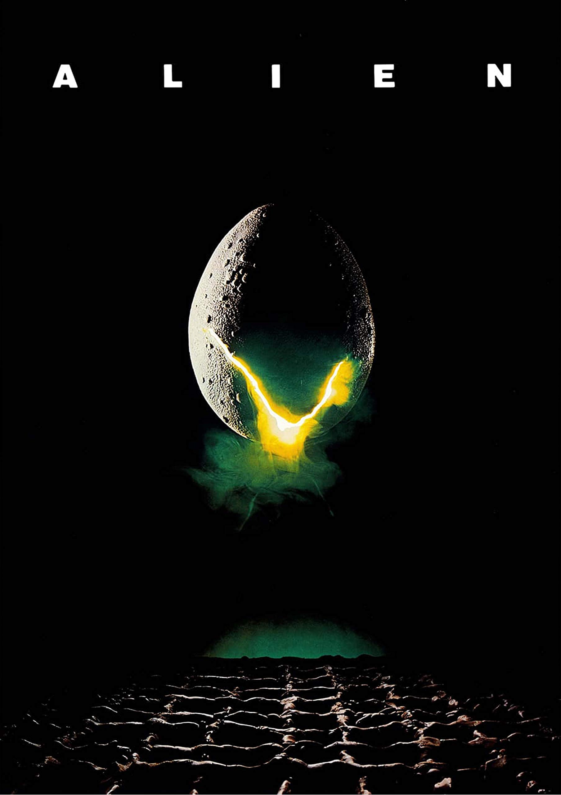

Year: 1972
My Rating: ★★★★☆ (4/5)
Alien, isn’t just a sci-fi film, it’s a slow burn horror masterpiece that still holds up today. What makes it stand out is how it takes its time. There’s no rush to throw the monster at you. It builds tension through silence, isolation, and the unknown, which in my opinion is far more effective than most modern horror attempts.
The story is simple on the surface, a space crew receives a distress call, investigates, and ends up facing something far beyond their control. But it’s not the plot that makes this movie work, it’s the atmosphere. The ship feels cold and lived in. The pacing is tight, and the sense of dread never lets up once the alien appears. It’s claustrophobic and eerie in a way that sticks with you.
Sigourney Weaver as Ripley was ahead of her time. She doesn’t start out as the obvious hero, but when things go wrong, she steps up. Her character feels real, not some forced action lead, just a capable person doing what needs to be done when everyone else is falling apart.
The alien itself is terrifying, not just in how it looks (which still holds up thanks to H.R. Giger’s creepy, biomechanical design), but in how little we actually know about it. It’s not a creature you can reason with. It’s just there to survive, and it does so in the most horrifying way possible.
Alien doesn’t waste time with unnecessary dialogue or over explaining things. It trusts the audience to pay attention and feel the fear on their own. That kind of confidence in storytelling is rare.
There’s not much to criticize here. Some might find the slow pacing a bit dated by today’s standards, but honestly, that’s what gives the film its strength. It’s methodical. It knows exactly what it’s doing.
Final score. 4 out of 5. A near perfect blend of sci-fi and horror that still sets the standard decades later.